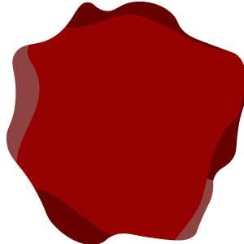

<nav>
  <div class='topNav'>
    <div id="topNav_home_container">
      <div id="topNav_home" routerLink="">
        <p><fa-icon [icon]="fonts.faHome"></fa-icon></p>
      </div>
    </div>
    <div id="topNav_buttons">
      <a href="/projects">{{ 'general.menu.tab2' | translate }}</a>
      <a href="/skills">{{ 'general.menu.tab3' | translate }}</a>
      <a href="/experience">{{ 'general.menu.tab4' | translate }}</a>
    </div>
    <div id="topNav_select_container">
      <select name="" id="topNav_select" (change)="useLanguage(this)">
        <option value="pl">polski</option>
        <option value="en">English</option>
      </select>
    </div>
  </div>

  <div class="slideBar_wrapper">
    <div class="slideBar">
      <title id="slideBar_title">{{ 'general.slider.title' | translate }}</title>
      <title id="slideBar_subtitle">{{ 'general.slider.subtitle' | translate }}</title>
      <div class="salami_container">
        
        
        
      </div>
    </div>
    <div id="slideBar_close" (click)="slideBar_close_active()">

    </div>
  </div>
</nav>

<footer>
  <div id="footer_main">
    <header>{{ 'general.footer.title' | translate }}</header>
    <div id="footer_media">
      <a href="https://www.facebook.com/hubert.annonimus/" target="_blank">
        <div class="media_container fb_style"><fa-icon [icon]="fonts.faFacebook"></fa-icon></div>
      </a>
      <a href="https://github.com/Hubert13888" target="_blank">
        <div class="media_container gh_style"><fa-icon [icon]="fonts.faGithub"></fa-icon></div>
      </a>
      <a href="https://bitbucket.org/Hubert138881/" target="_blank">
        <div class="media_container bb_style"><fa-icon [icon]="fonts.faBitbucket"></fa-icon></div>
      </a>
      <div class="media_container em_style" (click)="mail_show()"><fa-icon [icon]="fonts.faEnvelope"></fa-icon></div>
    </div>
  </div>
  <div id="footer_close" (click)="foot_toggle()"><fa-icon [icon]="fonts.faPizzaSlice"></fa-icon></div>
</footer>

<main>
  <router-outlet></router-outlet>
</main>